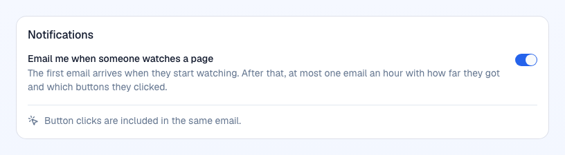
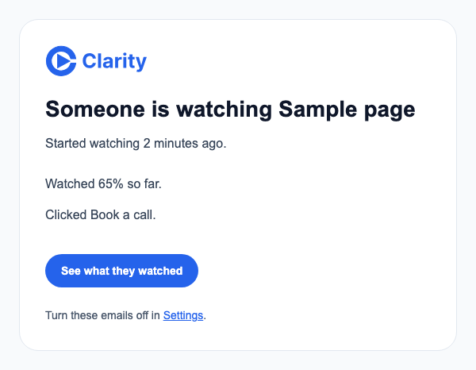

Notifications: one switch, on by default, fired when they start
Settings > Notifications and the view email. Changing the default is a policy call because it changes what 2,300 customers receive.
One switch: "Email me when someone watches a page". On by default. The first email goes when a prospect starts watching; the existing hourly digest carries how far they got, and button clicks join the same email. Delete the 60 / 80 / 100 toggles and the unread notify_shared column. Existing users become "on" unless they turned every threshold off (18 users turned 60% off; check they also lack 80 and 100 before flipping them).
The problem
Four toggles decide which watch thresholds email the rep, and only "watched 60%" is on by default. "Someone starts watching", the signal a salesperson can act on, is off. Clicking a button sends nothing. 93% of customers have never touched the toggles, and the 7% who did changed them in the old app; nobody has changed one in the new app.
What it would look like
Before, four toggles. After, one switch and one email that says where the prospect is.




What the data says
Customer profiles (2,484), value per column
| Column (default) | Off | On | Changed from default |
|---|---|---|---|
| notify_view, started watching (off) | 2,316 | 168 | 168 turned it on |
| notify_views_60 (on) | 18 | 2,466 | 18 turned it off |
| notify_views_80 (off) | 2,385 | 99 | 99 turned it on |
| notify_views_100 (off) | 2,390 | 94 | 94 turned it on |
| notify_shared (on) | 5 | 2,479 | read by nothing |
183 profiles (7%) differ from the defaults. All 183 rows date from the September import and none was updated since (updated_at equals created_at), so every change was made in the legacy app. Inferred: no customer has changed a notification setting in the new app.
View notification ledger since 2026-10-09 (8 owners)
| Threshold | Sent | Opted out |
|---|---|---|
| started (0) | 10 | 23 |
| 60% | 19 | 0 |
| 80% | 6 | 10 |
| 100% | 5 | 10 |
23 "started watching" crossings were dropped because the owner had the default off. Under the recommended default they would have been sent, subject to the hourly cap. 23 digests were sent.
Code facts: thresholds map to the four columns in view-notifications.ts:27-32; the hourly rule (first view at once, later views together after the hour) is already there. Defaults come from migrations-auth/0012_user_profiles.sql and account-spine.ts:60-69.
Options
The rep learns the moment a prospect is on the page, which is when a call lands. The hourly digest keeps volume to one email an hour per owner. Button clicks reuse the same path.
Keeps a "finished" email for reps who only want the strong signal. The digest already says how far they got, so the second switch repeats information.
Fixes the default and leaves the UI as it is.
Questions for William
Recommended: One. The follow-up email carries the progress.
Recommended: Yes, with a one-click "turn off" link in every email and the hourly cap. The ledger shows 23 missed start crossings against 40 emails sent in five days; these are the emails reps asked for.
Recommended: Same rule as views: at once if nothing was sent in the last hour, otherwise in the digest. One rule, one code path.
PRs once decided
NotificationsRoute.tsx: one switch writing notify_view; a migration sets it from the four columns; the 60/80/100 columns stop being read. Evidence: settings before/after, a user with 60 off stays off.
view-notifications.ts: a cta_click joins the owner's pending digest or sends at once. Email template line "Clicked Book a call". U07 renames the CTA to "See what they watched".